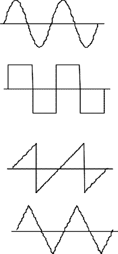
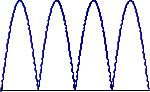

| プログラミングおよび演習 ＮＯ．11 |
| 配列データとポインタ処理 |
例11-1#include<stdio.h>
int main(void)
{
int a[10]={38, 52, 16, 45, 73,
97, 63, 25, 81, 68};/* 配列変数ａ */
int *c; /* ポインタ型の変数cの宣言 */
int i;
for(i=0; i<10; i++) /*配列aのデータを表示する*/
printf("a+%d=%d *(a+%d)=%d a[%d]=%d\n",i,a+i,i,*(a+i),i,a[i]);
return(0);
} |
| 演習問題 11-1 (Revised : 2012/11/26) 例１１－１のプログラムを実行して、配列変数の番地、配列要素の各データ、ポインタ表現を用いたときの配列要素データ、の各々の関係を確認してください（a,a+1,a+2‥‥の番地は、４づつ増えていく所に気をつけてください（１つの番地が１バイトのメモリを表す約束になっている。１つのint型データは4バイトのメモリを使うため）。 次に、int a[10] をshort型とchar型に変更した実験（プリント文の書式も適切なものに変更することを忘れずに。ただし、番地の表示は%d、char型配列に保存された数値データの表示は%dとする）を2回別々に行ない、intで宣言した場合との違いについて考察しなさい。 さらに、もう一度int a[10] に戻した後で（書式も元に戻す）、別に用意したポインタ変数ｃに、 c=a; として、配列メモリの先頭番地を代入してみてください。その後で、printf()文を printf("c+%d=%d *(c+%d)=%d c[%d]=%d\n",i,c+i,i,*(c+i),i,c[i]); に変えてみてください。cとaの２つの配列は全く同じデータになっていることを確認し、その理由について考察しなさい。別の言い方をすると、10個分の配列データを直接コピーしなくても、 c=a; のように、配列の先頭番地をコピーするだけで（１個の番地データをコピーするだけで）、１０個全部の配列データの受け渡しができたことに注意してください。 |
| 演習問題 11-2(Revised : 2013/11/11) 以下は、関数と呼び出し側の間で、配列データを受け渡す方法を理解してもらうためのプログラムです。 関数disp_data()は、例11-1と同じ整数型配列aのデータを受け取って画面表示する関数です。以下のプログラムを実行し、どんな形で呼び出し側と関数側の間で配列データをやり取りしているのか説明してみてください。 ヒント： 関数を呼ぶと、呼び出し側の引数のデータを関数側の引数にコピーする。その結果、 呼び出し側 関数側 10 --> len(配列データの数） a(先頭番地） --> c (ポインタ型変数） となることに注意してください。 #include <stdio.h>
int main(void)
{
int a[10]={45, 22, 18, 56, 69,
89, 95, 13, 71, 32};/* 配列変数a の型宣言*/
void disp_data(int, int*); /*関数disp_data()の型宣言*/
disp_data(10, a);
return(0);
}
/* 配列データを画面に表示する関数*/
void disp_data(int len,int *c)
{
int i;
for(i=0; i<len; i++)
printf("c+%d=%d *(c+%d)=%d c[%d]=%d\n",i,c+i,i,*(c+i),i,c[i]);
} |
例 11-2#include<stdio.h>
#include<math.h>
int main(void)
{
int len=500;
float x[500]; /* 配列ｘの宣言 */
void make_coswave(int,float *), disp_data(int,float *);/* 関数の型宣言 */
make_coswave(len,x); /* コサイン波のデータを作る*/
disp_data(len,x); /* 配列データを画面表示する*/
return(0);
}
/* コサイン波の配列データを作るための関数*/
/*配列の先頭番地を、ポインタ変数の引数aで受け取る */
void make_coswave(int len, float *a)
{
int i;
for(i=0;i<len;i++)
a[i]=‥‥ ; /* この部分は自分で作る */
}
/* 配列データを表示する関数*/
void disp_data(int len, float *a)
{
int i;
for(i=0; i<len; i++)
printf("%e\n",a[i]);
}
|
| 演習問題 11-3(Revised : 2013/11/11) 例１1-2に従って次式のコサイン波の値を計算するためのプロブラムを完成させてください。ただし、プログラムの具体的な仕様は以下のようにしてください。 x(t) = cos( 2π f t ) (1) 周波数ｆの値を50[Hz]とする。時間ｔは0.2[ms]ごとに501点（t=100～200[ms]）の時間での値を計算する。 (2) 計算結果（501個のデータ）は時間の順番に一次元配列に書き込む。 (3)プログラムを実行して、コサイン波のデータを画面に表示してください。 (4)上記(3)を行うと表示結果がコンソール画面から溢れてしまうため、最後の方のデータだけが表示された状態になります。スクロールバーを上のほうにスクロールして全体のデータを確認してください。ただし、テキスト形式の波形データは長すぎて見ることができませんので、レポートの実行結果には真ん中を省いて先頭と後尾の数行のデータだけを載せるようにしてください。 (5) さらに、次のようにしてエクセルでグラフを描いてみてください。
○コンソール画面のテキストをクリップボードにコピーする方法はここをみてください。 ○エクセルのグラフを画像データの形でファイルセーブする方法はここを参考にしてください。 ○セーブした図形ファイル（ファイル形式は ’jpg’ または 'png' とする）をメールの添付ファイルで送ってください。 ○xls形式のエクセルファイルや、zip形式の圧縮ファイルで送ってくる人がいますが、エクセルを開いたり圧縮ファイルを展開するのに手間がかかりますので止めてください。 |
void make_coswave(int len, float freq,float tdel,float amp,float *x)
{
int i;
float time;
for(i=0;i<len;i++){
time=tdel*i;
x[i]=amp*cos(2.0*PI*freq*time);
}
}
void add_data(int len,float *x1,float *x2)上記の問題のために3つの波形データを加算するには、上記の関数を２回呼び出すようにして使うことにします。
{ int i; for(i=0;i<len;i++) x1[i]=x1[i]+x2[i]; }
| 演習問題11-4 (Revised : 2013/11/18) 以下のプログラムを完成させて、基本波のコサイン波に、２倍、３倍‥‥の周波数をもつ高調波のコサイン波を、 F'=(4/π) [ F(ｆ0）-(1/3)F(3ｆ0）+(1/5)F(5ｆ0）+‥‥］ （方形波） F'=(8/π2) [ F(ｆ0）+(1/9)F(3ｆ0）+(1/25)F(5ｆ0）+‥‥］ （三角波） F'=(2/π)- (4/π) [ (1/3)F(2ｆ0）+(1/15)F(4ｆ0）+(1/35)F(6ｆ0）‥‥］ （全波整流波） に従って足し合わせた波形を計算してみてください。演習問題11-3と同様に、エクセルに描いてみてください。また、プログラムの動作を説明してください。 ただし、データ数、時間きざみ、及び周波数は以下のプログラム中にあるものを使ってください。 #include <stdio.h>
#include <math.h>
#define PI 3.14159265
void add_data(int, float*,float*);
void make_coswave(int,float,float,float,float *);
void disp_data(int , float *);
int main(void)
{
float x1[1000], x2[1000];
float tdel,freq,amp;
int len;
len=400; /*データ数*/
tdel=5e-5; /*時間きざみ*/
freq=50.0; /*周波数*/
/* @@@の部分は自分で作りかえること */
amp=@@@;
make_coswave(len,freq,tdel,amp,x1); /*基本波の計算*/
make_coswave(len, freq*@@@,tdel,amp/@@@,x2); /*1番目の高調波の計算*/
add_data(len,x1,x2);
make_coswave(len,freq*@@@,tdel,amp/@@@,x2); /*2番目の高調波の計算*/
add_data(len,x1,x2);
disp_data(len,x1);
return(0);
}
void add_data(int len,float *x1,float *x2)
{
int i;
for(i=0;i<len;i++)
x1[i]=x1[i]+x2[i];
}
/*コサイン波のデータを計算して配列に入れる*/
void make_coswave(int len, float freq,float tdel,float amp,float *x)
{
int i;
float time;
for(i=0;i<len;i++){
time=tdel*i;
x[i]=amp*cos(2.0*PI*freq*time);
}
}
void disp_data(int len, float *x)
{
int i;
for(i=0; i<len; i++)
printf("%e\n",x[i]);
} |
| 補足：波形を直接計算するための関数 以下は、方形波、三角波、全波整流波、を直接計算するための関数を示します。時間が余った人は、演習問題11-4のコサイン波を足し合わせて作った波形データと比較してみてください。 /* 方形波データの計算*/ void make_rectwave(int len, float freq,float tdel,float amp,float *x)
{
int i;
float arg,time;
for(i=0;i<len;i++){
time=tdel*i;
arg=fmod(freq*time,1.0);
if(arg==0.0 || arg==0.5)
x[i]=0.0;
else if(arg<0.5)
x[i]=amp;
else
x[i]=-amp;
}
}
/* 三角波データの計算*/
void make_triwave(int len, float freq,float tdel,float amp,float *x)
{
int i;
float arg,time;
for(i=0;i<len;i++){
time=tdel*i;
arg=fmod(freq*time,1.0);
if(arg<=0.25)
x[i]=4.0*amp*arg;
else if(arg<=0.75)
x[i]=4.0*amp*(0.5-arg);
else
x[i]=4.0*amp*(arg-1.0);
}
}
/* 全波整流波データの計算*/
void make_fulwavrec(int len, float freq,float tdel,float amp,float *x)
{
int i;
float arg,time; for(i=0;i<len;i++){
time=tdel*i;
x[i]=fabs(sin(2.0*PI*freq*time));
}
}
/* のこぎり波データの計算*/
void make_sawtoothwave(int len, float freq,float tdel,float amp,float *x)
{
int i;
float arg,time;
for(i=0;i<len;i++){
time=tdel*i;
arg=fmod(freq*time,1.0);
if(arg<0.5)
x[i]=2.0*amp*arg;
else if(arg==0.5)
x[i]=0.0;
else
x[i]=2.0*amp*(arg-1.0);
}
} |